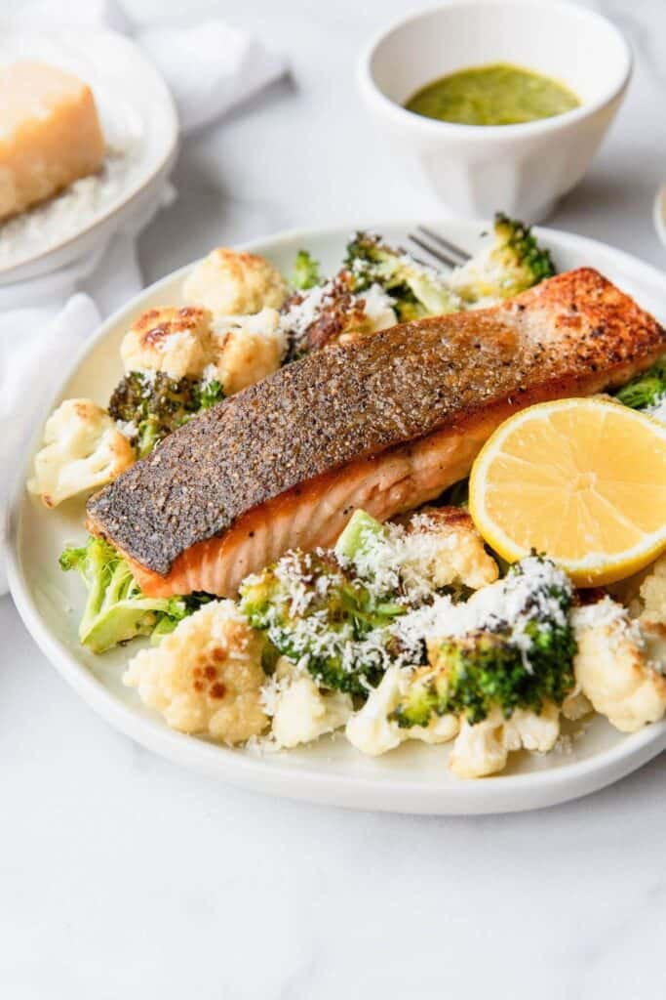

Baked Salmon with Broccoli, Cauliflower and Garlic Spinach
Go Back Home
Salmon with Vegetables

Image credits to Healthful Blondie
Description
Simple salmon recipe with high fiber. Colourful, healthy and yummy!
Prep time: 10 minutes, Cook time: 18-20 minutes, Serving: 2
Ingredients
- 2 x 140-170g salmon fillet
- 2 Cup broccoli florets
- 2 Cup Cauliflower florets
- 2-3 Cups baby spinach
- 2 Tsp extra virgin olive oil
- 2 Tsp clove garlic, minced
- 2 Tsp lemon juice
- Pinch of salt, black pepper, and dried herbs (thyme/oregano)
Steps
- Preheat the oven to 200°C and line a baking tray with baking paper.
- Toss the broccoli and cauliflower florets with a small drizzle of oil, salt, pepper, and dried herbs on one side of the tray. Place the salmon fillet on the other side, season lightly with salt, pepper, and a little lemon juice.
- Bake the salmon and veggies for 12-15 minutes. Until salmon flakes easily with a fork and veggies are tender.
- While the tray bakes, heat olive oil in a skillet over medium heat, add the minced garlic and cook for 20-30 seconds until frgrant.
- Add the spinach and a tablespoon of water if needed to create light steam. Cook for few minutes, tossing frequently until bright green and tender.
- Serve the baked salmon alongside the roasted veggies and wilted garlic spinach. Add a squeeze of lemon juice.